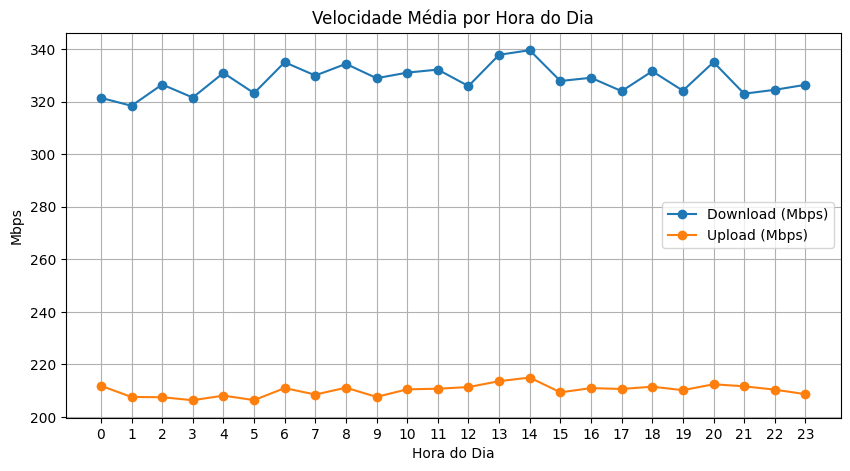
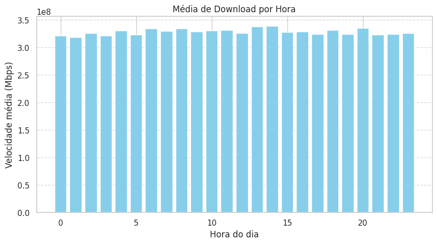
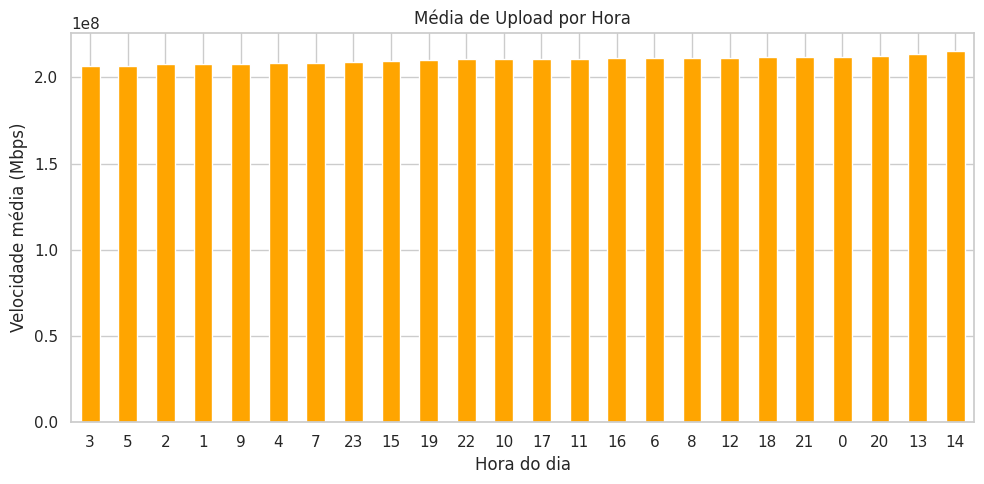
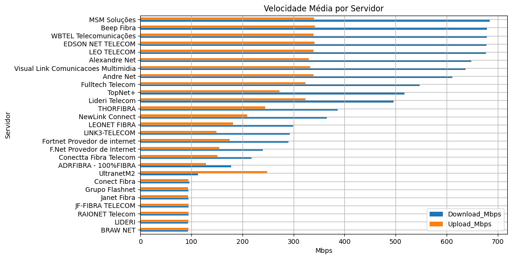
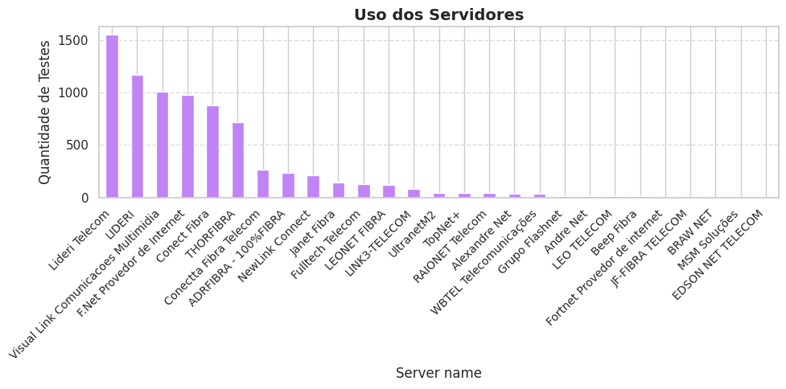

1. Informações Gerais
Total de registros: 7837
Período de Monitoramento: 03/08/2024 (14:40:28) até (22/07/2025) 13:00:01 Total de dias analisados: 352 dias Total de Servidores: 31 Quantidade de trocas de IP: 12812. Velocidade
Velocidade média de Download: 328.45 Mbps
Velocidade média de Upload: 210.15 Mbps 3. Upload e Download
Hora mais rápida (download): 14h
Hora mais lenta (download): 1h Hora mais rápida (upload): 14h
Hora mais lenta (upload): 3h 4. Velocidade por Servidor
5. Utilização de Servidor
Servidor mais utilizado: Lideri Telecom Servidor menos utilizado: JF-FIBRA TELECOM 💡 Insights de Negócio
- Planejamento de Operações – O horário de melhor desempenho (14h) pode ser priorizado para atividades críticas que demandem alta velocidade, como transmissões ao vivo ou grandes uploads.
- Atenção em Períodos Críticos – As quedas de velocidade na madrugada indicam horários ideais para manutenções programadas sem afetar produtividade.
- Gestão de Fornecedores – A Lideri Telecom é a mais utilizada, mas não apresenta a melhor velocidade. Há potencial para renegociar contratos ou diversificar provedores visando maior performance.
- Oportunidade de Otimização – A alta quantidade de trocas de IP pode afetar serviços que exigem conexões estáveis; ajustes técnicos ou mudança de política do provedor podem reduzir o impacto.